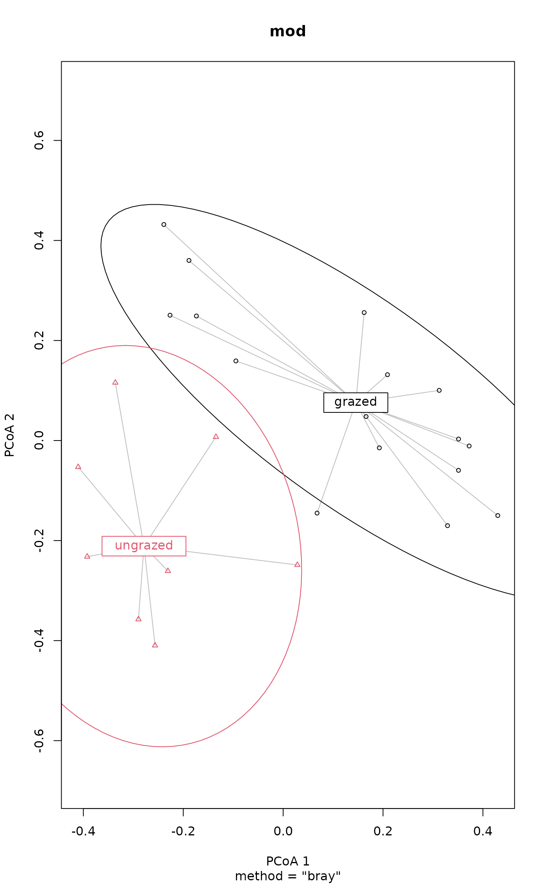
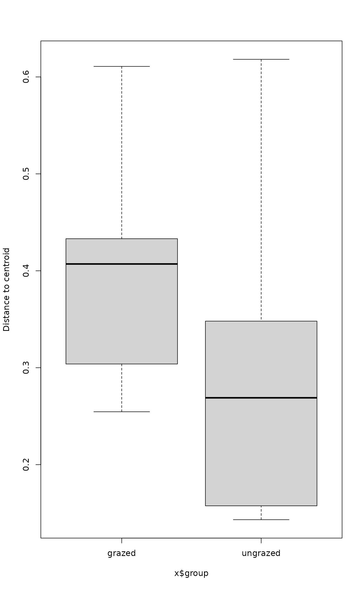
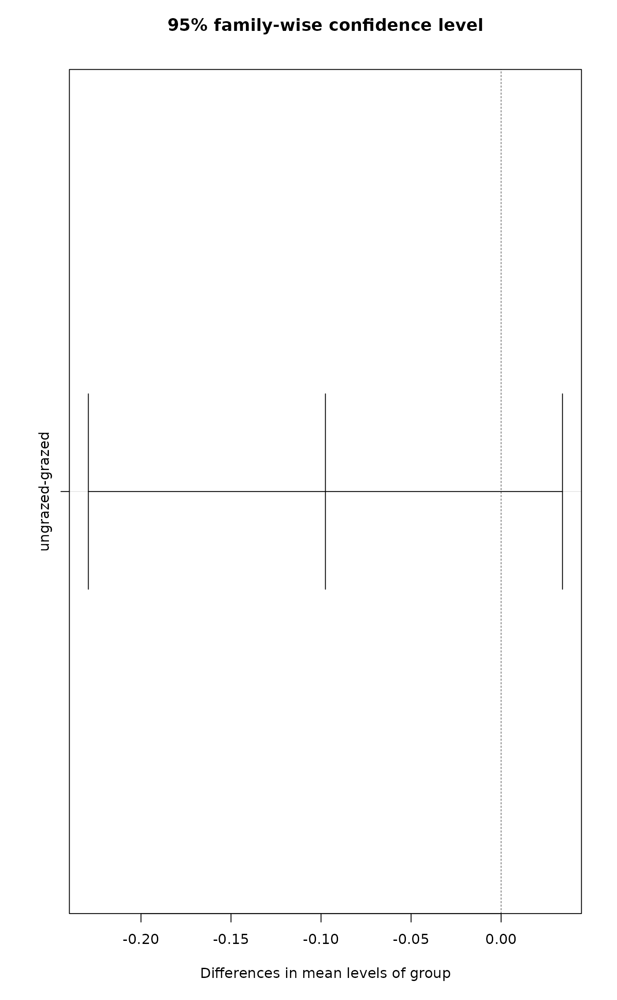

Multivariate homogeneity of groups dispersions (variances)
betadisper.RdImplements Marti Anderson's PERMDISP2 procedure for the analysis of
multivariate homogeneity of group dispersions (variances).
betadisper is a multivariate analogue of Levene's test for
homogeneity of variances. Non-euclidean distances between objects and
group centres (centroids or medians) are handled by reducing the
original distances to principal coordinates. This procedure has
latterly been used as a means of assessing beta diversity. There are
anova, scores, plot and boxplot methods.
TukeyHSD.betadisper creates a set of confidence intervals on
the differences between the mean distance-to-centroid of the levels of
the grouping factor with the specified family-wise probability of
coverage. The intervals are based on the Studentized range statistic,
Tukey's 'Honest Significant Difference' method.
betadisper(d, group, type = c("median","centroid"), bias.adjust = FALSE, sqrt.dist = FALSE, add = FALSE) # S3 method for betadisper anova(object, ...) # S3 method for betadisper scores(x, display = c("sites", "centroids"), choices = c(1,2), ...) # S3 method for betadisper eigenvals(x, ...) # S3 method for betadisper plot(x, axes = c(1,2), cex = 0.7, pch = seq_len(ng), col = NULL, lty = "solid", lwd = 1, hull = TRUE, ellipse = FALSE, conf, segments = TRUE, seg.col = "grey", seg.lty = lty, seg.lwd = lwd, label = TRUE, label.cex = 1, ylab, xlab, main, sub, ...) # S3 method for betadisper boxplot(x, ylab = "Distance to centroid", ...) # S3 method for betadisper TukeyHSD(x, which = "group", ordered = FALSE, conf.level = 0.95, ...) # S3 method for betadisper print(x, digits = max(3, getOption("digits") - 3), neigen = 8, ...)
Arguments
| d | a distance structure such as that returned by
|
|---|---|
| group | vector describing the group structure, usually a factor
or an object that can be coerced to a factor using
|
| type | the type of analysis to perform. Use the spatial median or the group centroid? The spatial median is now the default. |
| bias.adjust | logical: adjust for small sample bias in beta diversity estimates? |
| sqrt.dist | Take square root of dissimilarities. This often euclidifies dissimilarities. |
| add | Add a constant to the non-diagonal dissimilarities such
that all eigenvalues are non-negative in the underlying Principal
Co-ordinates Analysis (see |
| display | character; partial match to access scores for
|
| object, x | an object of class |
| choices, axes | the principal coordinate axes wanted. |
| hull | logical; should the convex hull for each group be plotted? |
| ellipse | logical; should the standard deviation data ellipse for each group be plotted? |
| conf | Expected fractions of data coverage for data ellipses,
e.g. 0.95. The default is to draw a 1 standard deviation data
ellipse, but if supplied, |
| pch | plot symbols for the groups, a vector of length equal to the number of groups. |
| col | colors for the plot symbols for the groups, a vector of length equal to the number of groups. |
| lty, lwd | linetype, linewidth for convex hulls and confidence ellipses. |
| segments | logical; should segments joining points to their centroid be drawn? |
| seg.col | colour to draw segments between points and their centroid. Can be a vector, in which case one colour per group. |
| seg.lty, seg.lwd | linetype and line width for segments. |
| label | logical; should the centroids by labelled with their respective factor label? |
| label.cex | numeric; character expansion for centroid labels. |
| cex, ylab, xlab, main, sub | graphical parameters. For details,
see |
| which | A character vector listing terms in the fitted model for which the intervals should be calculated. Defaults to the grouping factor. |
| ordered | logical; see |
| conf.level | A numeric value between zero and one giving the family-wise confidence level to use. |
| digits, neigen | numeric; for the |
| ... | arguments, including graphical parameters (for
|
Details
One measure of multivariate dispersion (variance) for a group of samples is to calculate the average distance of group members to the group centroid or spatial median (both referred to as 'centroid' from now on unless stated otherwise) in multivariate space. To test if the dispersions (variances) of one or more groups are different, the distances of group members to the group centroid are subject to ANOVA. This is a multivariate analogue of Levene's test for homogeneity of variances if the distances between group members and group centroids is the Euclidean distance.
However, better measures of distance than the Euclidean distance are available for ecological data. These can be accommodated by reducing the distances produced using any dissimilarity coefficient to principal coordinates, which embeds them within a Euclidean space. The analysis then proceeds by calculating the Euclidean distances between group members and the group centroid on the basis of the principal coordinate axes rather than the original distances.
Non-metric dissimilarity coefficients can produce principal coordinate axes that have negative Eigenvalues. These correspond to the imaginary, non-metric part of the distance between objects. If negative Eigenvalues are produced, we must correct for these imaginary distances.
The distance to its centroid of a point is $$z_{ij}^c = \sqrt{\Delta^2(u_{ij}^+, c_i^+) - \Delta^2(u_{ij}^-, c_i^-)},$$ where \(\Delta^2\) is the squared Euclidean distance between \(u_{ij}\), the principal coordinate for the \(j\)th point in the \(i\)th group, and \(c_i\), the coordinate of the centroid for the \(i\)th group. The super-scripted ‘\(+\)’ and ‘\(-\)’ indicate the real and imaginary parts respectively. This is equation (3) in Anderson (2006). If the imaginary part is greater in magnitude than the real part, then we would be taking the square root of a negative value, resulting in NaN, and these cases are changed to zero distances (with a warning). This is in line with the behaviour of Marti Anderson's PERMDISP2 programme.
To test if one or more groups is more variable than the others, ANOVA
of the distances to group centroids can be performed and parametric
theory used to interpret the significance of \(F\). An alternative is to
use a permutation test. permutest.betadisper permutes model
residuals to generate a permutation distribution of \(F\) under the Null
hypothesis of no difference in dispersion between groups.
Pairwise comparisons of group mean dispersions can also be performed
using permutest.betadisper. An alternative to the classical
comparison of group dispersions, is to calculate Tukey's Honest
Significant Differences between groups, via
TukeyHSD.betadisper. This is a simple wrapper to
TukeyHSD. The user is directed to read the help file
for TukeyHSD before using this function. In particular,
note the statement about using the function with
unbalanced designs.
The results of the analysis can be visualised using the plot
and boxplot methods.
One additional use of these functions is in assessing beta diversity
(Anderson et al 2006). Function betadiver
provides some popular dissimilarity measures for this purpose.
As noted in passing by Anderson (2006) and in a related
context by O'Neill (2000), estimates of dispersion around a
central location (median or centroid) that is calculated from the same data
will be biased downward. This bias matters most when comparing diversity
among treatments with small, unequal numbers of samples. Setting
bias.adjust=TRUE when using betadisper imposes a
\(\sqrt{n/(n-1)}\) correction (Stier et al. 2013).
Value
The anova method returns an object of class "anova"
inheriting from class "data.frame".
The scores method returns a list with one or both of the
components "sites" and "centroids".
The plot function invisibly returns an object of class
"ordiplot", a plotting structure which can be used by
identify.ordiplot (to identify the points) or other
functions in the ordiplot family.
The boxplot function invisibly returns a list whose components
are documented in boxplot.
eigenvals.betadisper returns a named vector of eigenvalues.
TukeyHSD.betadisper returns a list. See TukeyHSD
for further details.
betadisper returns a list of class "betadisper" with the
following components:
numeric; the eigenvalues of the principal coordinates analysis.
matrix; the eigenvectors of the principal coordinates analysis.
numeric; the Euclidean distances in principal coordinate space between the samples and their respective group centroid or median.
factor; vector describing the group structure
matrix; the locations of the group centroids or medians on the principal coordinates.
numeric; the mean distance to each group centroid or median.
the matched function call.
Note
If group consists of a single level or group, then the
anova and permutest methods are not appropriate and if
used on such data will stop with an error.
Missing values in either d or group will be removed
prior to performing the analysis.
Warning
Stewart Schultz noticed that the permutation test for
type="centroid" had the wrong type I error and was
anti-conservative. As such, the default for type has been
changed to "median", which uses the spatial median as the group
centroid. Tests suggests that the permutation test for this type of
analysis gives the correct error rates.
References
Anderson, M.J. (2006) Distance-based tests for homogeneity of multivariate dispersions. Biometrics 62, 245--253.
Anderson, M.J., Ellingsen, K.E. & McArdle, B.H. (2006) Multivariate dispersion as a measure of beta diversity. Ecology Letters 9, 683--693.
O'Neill, M.E. (2000) A Weighted Least Squares Approach to Levene's Test of Homogeneity of Variance. Australian & New Zealand Journal of Statistics 42, 81-–100.
Stier, A.C., Geange, S.W., Hanson, K.M., & Bolker, B.M. (2013) Predator density and timing of arrival affect reef fish community assembly. Ecology 94, 1057--1068.
See also
permutest.betadisper, anova.lm,
scores, boxplot,
TukeyHSD. Further measure of beta diversity
can be found in betadiver.
Examples
data(varespec) ## Bray-Curtis distances between samples dis <- vegdist(varespec) ## First 16 sites grazed, remaining 8 sites ungrazed groups <- factor(c(rep(1,16), rep(2,8)), labels = c("grazed","ungrazed")) ## Calculate multivariate dispersions mod <- betadisper(dis, groups) mod#> #> Homogeneity of multivariate dispersions #> #> Call: betadisper(d = dis, group = groups) #> #> No. of Positive Eigenvalues: 15 #> No. of Negative Eigenvalues: 8 #> #> Average distance to median: #> grazed ungrazed #> 0.3926 0.2706 #> #> Eigenvalues for PCoA axes: #> (Showing 8 of 23 eigenvalues) #> PCoA1 PCoA2 PCoA3 PCoA4 PCoA5 PCoA6 PCoA7 PCoA8 #> 1.7552 1.1334 0.4429 0.3698 0.2454 0.1961 0.1751 0.1284#> Analysis of Variance Table #> #> Response: Distances #> Df Sum Sq Mean Sq F value Pr(>F) #> Groups 1 0.07931 0.079306 4.6156 0.04295 * #> Residuals 22 0.37801 0.017182 #> --- #> Signif. codes: 0 ‘***’ 0.001 ‘**’ 0.01 ‘*’ 0.05 ‘.’ 0.1 ‘ ’ 1#> #> Permutation test for homogeneity of multivariate dispersions #> Permutation: free #> Number of permutations: 99 #> #> Response: Distances #> Df Sum Sq Mean Sq F N.Perm Pr(>F) #> Groups 1 0.07931 0.079306 4.6156 99 0.04 * #> Residuals 22 0.37801 0.017182 #> --- #> Signif. codes: 0 ‘***’ 0.001 ‘**’ 0.01 ‘*’ 0.05 ‘.’ 0.1 ‘ ’ 1 #> #> Pairwise comparisons: #> (Observed p-value below diagonal, permuted p-value above diagonal) #> grazed ungrazed #> grazed 0.04 #> ungrazed 0.04295#> Tukey multiple comparisons of means #> 95% family-wise confidence level #> #> Fit: aov(formula = distances ~ group, data = df) #> #> $group #> diff lwr upr p adj #> ungrazed-grazed -0.1219422 -0.2396552 -0.004229243 0.0429502 #>plot(mod.HSD)## can also specify which axes to plot, ordering respected plot(mod, axes = c(3,1), seg.col = "forestgreen", seg.lty = "dashed")#> List of 2 #> $ sites : num [1:24, 1:2] 0.0946 -0.3125 -0.3511 -0.3291 -0.1926 ... #> ..- attr(*, "dimnames")=List of 2 #> .. ..$ : chr [1:24] "18" "15" "24" "27" ... #> .. ..$ : chr [1:2] "PCoA1" "PCoA2" #> $ centroids: num [1:2, 1:2] -0.1455 0.2786 0.0758 -0.2111 #> ..- attr(*, "dimnames")=List of 2 #> .. ..$ : chr [1:2] "grazed" "ungrazed" #> .. ..$ : chr [1:2] "PCoA1" "PCoA2"#> PCoA1 PCoA2 PCoA3 PCoA4 #> 18 0.09459373 0.15914576 0.074400844 -0.202466025 #> 15 -0.31248809 0.10032751 -0.062243360 0.110844864 #> 24 -0.35106507 -0.05954096 -0.038079447 0.095060928 #> 27 -0.32914546 -0.17019348 0.231623720 0.019110623 #> 23 -0.19259443 -0.01459250 -0.005679372 -0.209718312 #> 19 -0.06794575 -0.14501690 -0.085645653 0.002431355#> PCoA1 PCoA2 PCoA3 PCoA4 #> grazed -0.1455200 0.07584572 -0.01366220 -0.0178990 #> ungrazed 0.2786095 -0.21114993 -0.03475586 0.0220129#> PCoA1 PCoA2 PCoA3 PCoA4 PCoA5 PCoA6 PCoA7 #> 1.7552165 1.1334455 0.4429018 0.3698054 0.2453532 0.1960921 0.1751131 #> PCoA8 PCoA9 PCoA10 PCoA11 PCoA12 PCoA13 PCoA14 #> 0.1284467 0.0971594 0.0759601 0.0637178 0.0583225 0.0394934 0.0172699 #> PCoA15 PCoA16 PCoA17 PCoA18 PCoA19 PCoA20 PCoA21 #> 0.0051011 -0.0004131 -0.0064654 -0.0133147 -0.0253944 -0.0375105 -0.0480069 #> PCoA22 PCoA23 #> -0.0537146 -0.0741390## try out bias correction; compare with mod3 (mod3B <- betadisper(dis, groups, type = "median", bias.adjust=TRUE))#> #> Homogeneity of multivariate dispersions #> #> Call: betadisper(d = dis, group = groups, type = "median", bias.adjust #> = TRUE) #> #> No. of Positive Eigenvalues: 15 #> No. of Negative Eigenvalues: 8 #> #> Average distance to median: #> grazed ungrazed #> 0.4055 0.2893 #> #> Eigenvalues for PCoA axes: #> (Showing 8 of 23 eigenvalues) #> PCoA1 PCoA2 PCoA3 PCoA4 PCoA5 PCoA6 PCoA7 PCoA8 #> 1.7552 1.1334 0.4429 0.3698 0.2454 0.1961 0.1751 0.1284anova(mod3B)#> Analysis of Variance Table #> #> Response: Distances #> Df Sum Sq Mean Sq F value Pr(>F) #> Groups 1 0.07193 0.071927 3.7826 0.06468 . #> Residuals 22 0.41834 0.019015 #> --- #> Signif. codes: 0 ‘***’ 0.001 ‘**’ 0.01 ‘*’ 0.05 ‘.’ 0.1 ‘ ’ 1#> #> Permutation test for homogeneity of multivariate dispersions #> Permutation: free #> Number of permutations: 99 #> #> Response: Distances #> Df Sum Sq Mean Sq F N.Perm Pr(>F) #> Groups 1 0.07193 0.071927 3.7826 99 0.07 . #> Residuals 22 0.41834 0.019015 #> --- #> Signif. codes: 0 ‘***’ 0.001 ‘**’ 0.01 ‘*’ 0.05 ‘.’ 0.1 ‘ ’ 1## should always work for a single group group <- factor(rep("grazed", NROW(varespec))) (tmp <- betadisper(dis, group, type = "median"))#> #> Homogeneity of multivariate dispersions #> #> Call: betadisper(d = dis, group = group, type = "median") #> #> No. of Positive Eigenvalues: 15 #> No. of Negative Eigenvalues: 8 #> #> Average distance to median: #> grazed #> 0.4255 #> #> Eigenvalues for PCoA axes: #> (Showing 8 of 23 eigenvalues) #> PCoA1 PCoA2 PCoA3 PCoA4 PCoA5 PCoA6 PCoA7 PCoA8 #> 1.7552 1.1334 0.4429 0.3698 0.2454 0.1961 0.1751 0.1284(tmp <- betadisper(dis, group, type = "centroid"))#> #> Homogeneity of multivariate dispersions #> #> Call: betadisper(d = dis, group = group, type = "centroid") #> #> No. of Positive Eigenvalues: 15 #> No. of Negative Eigenvalues: 8 #> #> Average distance to centroid: #> grazed #> 0.4261 #> #> Eigenvalues for PCoA axes: #> (Showing 8 of 23 eigenvalues) #> PCoA1 PCoA2 PCoA3 PCoA4 PCoA5 PCoA6 PCoA7 PCoA8 #> 1.7552 1.1334 0.4429 0.3698 0.2454 0.1961 0.1751 0.1284## simulate missing values in 'd' and 'group' ## using spatial medians groups[c(2,20)] <- NA dis[c(2, 20)] <- NA mod2 <- betadisper(dis, groups) ## messages#>#>mod2#> #> Homogeneity of multivariate dispersions #> #> Call: betadisper(d = dis, group = groups) #> #> No. of Positive Eigenvalues: 14 #> No. of Negative Eigenvalues: 5 #> #> Average distance to median: #> grazed ungrazed #> 0.3984 0.3008 #> #> Eigenvalues for PCoA axes: #> (Showing 8 of 19 eigenvalues) #> PCoA1 PCoA2 PCoA3 PCoA4 PCoA5 PCoA6 PCoA7 PCoA8 #> 1.4755 0.8245 0.4218 0.3456 0.2159 0.1688 0.1150 0.1060#> #> Permutation test for homogeneity of multivariate dispersions #> Permutation: free #> Number of permutations: 99 #> #> Response: Distances #> Df Sum Sq Mean Sq F N.Perm Pr(>F) #> Groups 1 0.039979 0.039979 2.4237 99 0.16 #> Residuals 18 0.296910 0.016495anova(mod2)#> Analysis of Variance Table #> #> Response: Distances #> Df Sum Sq Mean Sq F value Pr(>F) #> Groups 1 0.039979 0.039979 2.4237 0.1369 #> Residuals 18 0.296910 0.016495plot(mod2)boxplot(mod2)## Using group centroids mod3 <- betadisper(dis, groups, type = "centroid")#>#>mod3#> #> Homogeneity of multivariate dispersions #> #> Call: betadisper(d = dis, group = groups, type = "centroid") #> #> No. of Positive Eigenvalues: 14 #> No. of Negative Eigenvalues: 5 #> #> Average distance to centroid: #> grazed ungrazed #> 0.4001 0.3108 #> #> Eigenvalues for PCoA axes: #> (Showing 8 of 19 eigenvalues) #> PCoA1 PCoA2 PCoA3 PCoA4 PCoA5 PCoA6 PCoA7 PCoA8 #> 1.4755 0.8245 0.4218 0.3456 0.2159 0.1688 0.1150 0.1060#> #> Permutation test for homogeneity of multivariate dispersions #> Permutation: free #> Number of permutations: 99 #> #> Response: Distances #> Df Sum Sq Mean Sq F N.Perm Pr(>F) #> Groups 1 0.033468 0.033468 3.1749 99 0.08 . #> Residuals 18 0.189749 0.010542 #> --- #> Signif. codes: 0 ‘***’ 0.001 ‘**’ 0.01 ‘*’ 0.05 ‘.’ 0.1 ‘ ’ 1anova(mod3)#> Analysis of Variance Table #> #> Response: Distances #> Df Sum Sq Mean Sq F value Pr(>F) #> Groups 1 0.033468 0.033468 3.1749 0.09166 . #> Residuals 18 0.189749 0.010542 #> --- #> Signif. codes: 0 ‘***’ 0.001 ‘**’ 0.01 ‘*’ 0.05 ‘.’ 0.1 ‘ ’ 1plot(mod3)boxplot(mod3)